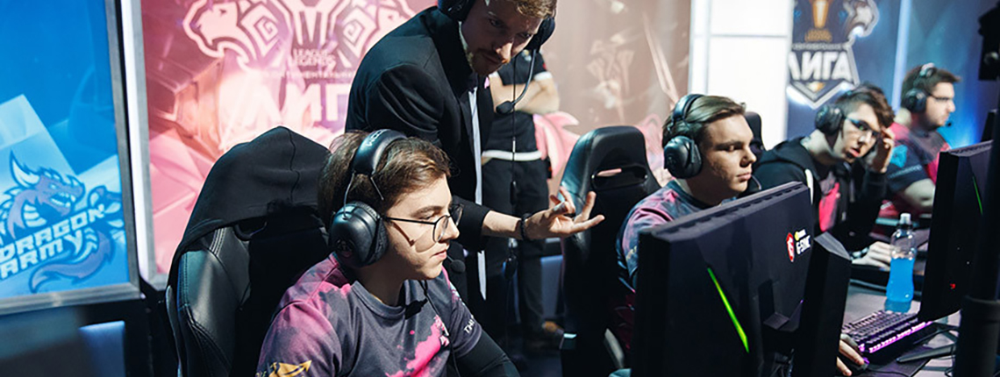

Киберспорт. Как все устроено
Киберспорт - командное или индивидуальное соревнование по компьютерным играм. В нём важна скорость прохождения игры, быстрота реакции и соревновательность в целом, именно поэтому он считается спортом.
Крупнейшие киберспортивные турниры привлекают огромную аудиторию по всему миру. В 2019 году прошло больше 200 международных киберспортивных турниров и доход киберспортивной индустрии составил 950 миллионов долларов. По прогнозам экспертов, в 2020 году этот показатель впервые превысит 1 миллиард.
Кибертурнир
Профессиональные соревнования проводятся не по всем компьютерным играм. В основном в киберспорте задействованы те игры, для победы в которых участники должны проявлять специфические навыки – командную тактику или скорость реакции.
Лучше всего для проведения киберспортивных соревнований подходят стратегии и шутеры.
Большинство таких игр многопользовательские. Спортсмены могут собираться в команды и тренироваться. Успех в стратегиях и шутерах зависит от уровня подготовки киберспортсменов: навыков отдельных игроков и сыгранности команд.
Самые популярные киберспортивные игры – Dota 2, Counter-Strike: Global Offensive (CS: GO) и League of Legends (LoL). Соревнования по этим играм собирают самую большую зрительскую аудиторию и привлекают многих спонсоров.

Киберспортсмен
Профессионально сообщество киберспортсменов представлено киберспортивными организациями, которые являются аналогами традиционных спортивных клубов. Здесь со спортсменами заключены контракты, а в подготовительный процесс вовлечено достаточно большое количество людей, в том числе обширный тренерский состав.
Главный тренер отвечает за тимбилдинг, коммуникацию в команде, за взаимоотношения между членами команды. Внутриигровой тренер разрабатывает тактику, анализируют игру спортсменов и дает советы. Также в команде часто имеется запасной состав игроков на каждую роль.
Специальный режим тренировок и отдыха, разбор сыгранных матчей, психологическая подготовка - все как в настоящем спорте.
Киберспортсмены тренируются больше обычных спортсменов по 10-12 часов в день.
Средний возраст киберспортсмена – 22-23 года. Обычно карьера дотера завершается в 25-26 лет – это тот возраст, когда время реакции ухудшается. Там, где от реакции ничего не зависит, можно поиграть на топ-уровне и в 30-35 лет.
Лучшие игроки, закончив свою киберспортивную карьеру, становятся тренерами, но их очень мало. Из 16 топовых команд только в четырех есть тренеры.
Остальные игроки чаще всего становятся либо комментаторами, либо стримерами.
Для большинства киберспортсменов стримерство оказывается даже более выгодным, чем участие в турнирах: если занимать не первые места, много денег им не достанется.
На чём зарабатывают киберспортсмены?
- 1. Выигрыши на турнирах: 70% часть призовых получают именно игроки.
- 2. Продажа атрибутики. Всё как в футболе: фанаты киберспортивных команд покупают товары с их символикой, а проценты с продаж летят игрокам.
- 3. Большинство киберспортсменов параллельно с участием в турнирах занимаются стримингом ( прямые трансляции ) игр и зарабатывают на донатах ( добровольных пожертвованиях ) зрителей.
Современные киберспортсмены по своей популярности и гонорарам не уступают футбольным звёздам
Профессиональный игрок в Dota 2
За карьеру заработал ~ 6,9 млн $
Профессиональный игрок в Dota 2
За карьеру заработал ~ 4,6 млн $
Профессиональный игрок в Dota 2
За карьеру заработал ~ 3,3 млн $
Профессиональный игрок в Dota 2
За карьеру заработал ~ 1,7 млн $
Почему зрителям нравится киберспорт?
Речь все же о видеоиграх, позволяющих реализовать практически любую идею без оглядки на законы физики. Такие турниры известны своей эффектностью, предлагая множество жанров, привлекательных персонажей, талантливых комментаторов и крупные денежные призы.
Не стоит забывать и другие преимущества киберспорта:
- - Постоянные нововведения. Появляются новые игры или сезонные обновления. Абсолютно каждый чемпионат хотя бы слегка отличается от предыдущих, будь то новый персонаж, карта, оружие или изменение баланса.
- - Интерактивность. Можно самостоятельно принять участие в малых лигах, нужен лишь компьютер и установленная киберспортивная игра от крупного издателя.
- - Наличие уникальных механик. Победитель определяется не по физическим параметрам, а мастерству. Иногда смекалка оппонентов приводит к крайне увлекательному противостоянию.
- - Активное развитие. Крупные корпорации сейчас вкладывают огромные деньги в развитие направления.
- - Необычные цели для победы. Например – сражение целыми армиями, пошаговые бои группами бойцов или убийство оппонентов в шутере.
Разнообразие турниров действительно может впечатлить, особенно на фоне множества известных команд и отдельных чемпионов.